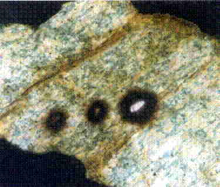
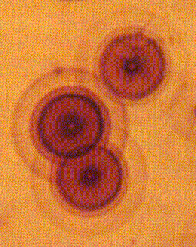

Refutadas las "Halos de Polonio"
Una revisión de "Halos radiactivos en una
perspectiva radio-cronológica
y cosmológica" de Robert V. Gentry
por
Thomas A. Baillieu

Introducción
A medida que continúa el debate sobre creación/evolución, ha habido un aumento en la sofisticación de ciertos argumentos y publicaciones creacionistas. Puede ser un desafío especialmente difícil cuando el autor creacionista tiene credenciales profesionales y ha publicado en revistas científicas mainstream. Un tal individuo es Robert Gentry, quien posee un título de Maestría en Física (y un doctorado honorífico del fundamentalista Columbia Union College). Durante más de trece años ocupó un puesto de asociado de investigación en el Oak Ridge National Laboratory, donde formó parte de un equipo que investigó formas de inmovilizar residuos nucleares. Gentry ha dedicado la mayor parte de su vida profesional al estudio de la naturaleza de pequeñas características de decoloración en mica y otros minerales, y concluyó que son prueba de una Tierra joven.
Sobre las RocasLos geólogos clasifican las rocas en tres categorías principales - sedimentarias, ígneas y metamórficas - basándose en la manera en que se forman. Las rocas sedimentarias son secundarias en formación, siendo el producto de rocas precursoras (de cualquier tipo). Las rocas ígneas se forman a partir de material fundido, y se subdividen aún más en dos categorías principales: las rocas volcánicas, que se forman a partir de lava extruida en o cerca de la superficie; y las rocas plutónicas, que se forman a partir de magma, profundamente dentro de la corteza. Ambos tipos de rocas ígneas están compuestos por una mezcla de diferentes minerales. A medida que las rocas ígneas se enfrían, los cristales minerales se forman siguiendo una secuencia específica. Los cristales desarrollan una textura entrelazada, con algunos de los minerales de rastro quedando completamente rodeados por cristales que se forman más tarde. Las rocas volcánicas, debido a que pueden enfriarse y cristalizar rápidamente, tienen una textura de grano muy fino; los granos minerales individuales son demasiado pequeños para verse fácilmente a simple vista. Por otro lado, las rocas plutónicas se enfrían muy lentamente, en el orden de un millón de años o más para algunos magmas profundamente enterrados y aislados. Los granos minerales en estas rocas pueden crecer muy grandes y se distinguen fácilmente en muestras a mano. El granito es un tipo bien conocido de roca ígnea plutónica, pero hay muchos otros también. Los geólogos distinguen estos tipos de roca basándose en su composición química y mineralógica. Los granitos, por ejemplo, tienen más del 10% de cuarzo y abundante feldespato potásico. Otras rocas plutónicas tienen menos cuarzo y potasio, y diferentes proporciones de minerales de feldespato de calcio y sodio. Los verdaderos granitos son relativamente tardíos en la escena geológica, ya que requerieron una serie de reciclajes de material cortical para diferenciar y concentrar el potasio. En una edición anterior de NCSE Reports, Lorence Collins (marzo/abril, 1999) proporcionó una revisión exhaustiva del origen y la naturaleza de las rocas graníticas. Las rocas metamórficas representan alteraciones de rocas precursoras sedimentarias, ígneas u otras metamórficas. A través de los ciclos de enterramiento, plegamiento, fallamiento y subducción de las placas corticales, las rocas son empujadas y arrastradas hacia profundidades donde - bajo calor y presión - tienen lugar cambios. En las rocas metamórficas, se forman nuevos minerales que son más estables a temperaturas y presiones más altas. A veces los minerales se segregan en bandas distintas. Cuando las presiones de enterramiento y las temperaturas se vuelven demasiado grandes, las rocas se funden completamente, convirtiéndose en nuevas rocas ígneas. |
|
 |
Para comprender completamente la hipótesis de Gentry, es útil tener conocimientos básicos en geología, mineralogía y física de la radiación. Los cuadros de las próximas páginas presentan un breve tutorial sobre rocas, minerales y radiactividad. Ciertos minerales, como el zircón y la monacita, que se forman como constituyentes de rastro comunes en rocas ígneas, tienen estructuras cristalinas que pueden acomodar cantidades variables de elementos radiactivos naturales, uranio y torio. Cuando estos minerales ocurren como inclusiones en ciertos otros minerales, más notablemente en la familia de las micas, a menudo se observa que desarrollan decoloración o halos "pleocroicos". Los halos son causados por el daño radiactivo en la estructura cristalina del mineral huésped. Figura 1 muestra un halo de decoloración típico alrededor de una inclusión de mineral radiactivo en el mineral piroxeno. La zona de daño es aproximadamente esférica alrededor de una inclusión mineral central o fuente radiactiva. Observe que el halo tiene la mayor intensidad de decoloración cerca de la fuente, desvaneciéndose gradualmente con la distancia en el mineral huésped hasta un borde "difuso".
Los halos de daño por radiación alrededor de inclusiones minerales son bien conocidos en la literatura geológica. Los halos de decoloración en rocas más jóvenes tienden a ser más pequeños y menos intensos que en rocas más antiguas, lo que indica que la zona de daño cristalino aumenta con el tiempo. A partir de estas observaciones, se hicieron intentos tempranos de utilizar las dimensiones de los halos como una técnica de datación por edad. Esto nunca tuvo éxito completo, ya que el tamaño/intensidad de un halo de daño observado también era una función de la abundancia de radionúclidos presentes en la inclusión y de la estructura cristalina del mineral huésped.
La tesis de Gentry tiene varios componentes. El primero es su argumento de que las rocas graníticas de las cuales supuestamente proceden las muestras constituyen la corteza "primordial" de la Tierra. Dentro de estas rocas se encuentran biotita (una forma de mica que contiene hierro) y cristales de fluorita que presentan una clase relativamente poco común de pequeñas manchas concéntricas de coloración "halos" (figura 2). Estos halos se consideraron el resultado de daños en la estructura cristalina de los minerales anfitriones causados por partículas alfa de alta energía. En numerosos artículos publicados en revistas científicas durante las décadas de 1970 y 1980, Gentry construyó el argumento de que las diferentes energías de desintegración alfa de varios isótopos radiactivos que ocurren naturalmente resultaron en diámetros de halo distintamente diferentes. Por lo tanto, Gentry concluyó que podía distinguir halos que resultaban únicamente de la desintegración radiactiva de varios isótopos del elemento polonio. El polonio, parte de la cadena de desintegración del uranio y el torio naturales, tiene una vida media muy corta - medida en microsegundos a días, dependiendo del isótopo específico. Los halos concéntricos asociados con la desintegración del polonio - pero sin ningún anillo correspondiente a ningún otro isótopo de la serie de desintegración del uranio - se tomaron como evidencia de que la roca anfitriona se formó casi instantáneamente en lugar de por el enfriamiento lento de un magma original durante millones de años. Gentry extrapola que todos los granitos precámbricos - su roca de corteza primordial - deben haberse formado en menos de tres minutos, y que los halos de polonio son por lo tanto prueba del modelo de creación de la Tierra joven según el Génesis.
RadioactividadLa radioactividad es un fenómeno del núcleo de los átomos. Quizás recuerde de la clase de química de la escuela secundaria que los átomos están compuestos de protones, que llevan una carga positiva; neutrones, sin carga; y electrones con carga negativa. Los protones y los neutrones juntos forman el núcleo del átomo, rodeado por una nube de electrones en órbitas distintas. En los átomos neutros, los números de protones y electrones siempre coinciden, equilibrando sus cargas. Es el número de protones (y por tanto el número de electrones) lo que da a un elemento sus características químicas únicas. Los átomos, sin embargo, pueden tener diferentes números de neutrones sin cambiar su comportamiento químico. Por ejemplo, el átomo más simple, el hidrógeno, tiene un protón y un electrón. Existen dos variedades adicionales de hidrógeno: una que tiene un neutrón además del protón (llamada deuterio); y otra con dos neutrones (conocida como tritio). Las diferentes variedades del mismo elemento se conocen como isótopos. El uranio tiene 92 protones, pero tiene diferentes isótopos con 141, 142, 143, 144, 145 y 146 neutrones. La radioactividad es un fenómeno complejo, pero puede pensarse simplemente como la consecuencia del desequilibrio causado en un núcleo atómico por un exceso de neutrones. Los isótopos que tienen demasiados neutrones intentan volverse más estables eliminando neutrones mediante diversos medios, siendo el más común la emisión de partículas alfa y beta de alta energía. Una partícula alfa está compuesta por dos protones y dos neutrones, y es químicamente indistinguible de un núcleo de helio [de hecho, todo el gas helio vendido comercialmente proviene de la desintegración radiactiva del uranio, el gas que a veces queda atrapado en yacimientos de petróleo que yacen sobre cuerpos de mineral de uranio]. La emisión de una partícula alfa crea un nuevo elemento químico con dos protones menos que su átomo padre. El isótopo radiactivo Uranio-238 (92 protones) se desintegra emitiendo una partícula alfa para convertirse en un átomo de Torio-234 (90 protones). Las partículas beta se crean cuando un neutrón se descompone en un protón y un electrón; la partícula beta es, por tanto, un electrón, pero en este caso proviene del núcleo. En la desintegración beta, el protón permanece en el núcleo, causando también que el átomo adopte una nueva identidad química. El Rubidio-87 (37 protones) se desintegra para convertirse en Estroncio-87 (38 protones). Se conocen otros tipos de esquemas de desintegración radiactiva, pero son mucho menos comunes que la emisión de partículas alfa y beta, y no juegan un papel real en el tema en cuestión. Un último punto: la radioactividad es un fenómeno estadístico. No todos los átomos radiactivos dentro de una masa se desintegran al mismo tiempo. Por ejemplo, una cantidad de uranio-238 se desintegra a una tasa tal que después de 4.5 mil millones de años la mitad de la masa original se ha convertido en otros átomos. Varios de los átomos "hijos" en la serie de desintegración del uranio-238 son ellos mismos radiactivos y se desintegran a sus propias tasas estadísticas hasta que finalmente se alcanza el isótopo estable y no radiactivo de Plomo-206. |
Para que esta hipótesis sea aceptada, debe ser comprobable. Afortunadamente, la tesis de Gentry nos permite plantear varias preguntas que pueden responderse examinando la evidencia del mundo natural. Una respuesta sí a cada pregunta reforzaría significativamente los argumentos de Gentry.
1) ¿Las rocas de las que Gentry extrajo sus muestras representan las rocas de base "primitivas" de la Tierra originalmente creada?
Gentry es un físico, no un geólogo. No sigue las prácticas aceptadas de reporte geológico y consistentemente falla en proporcionar la información que una tercera parte necesitaría para recolectar muestras comparables para su análisis. Para su investigación, Gentry utilizó secciones delgadas de rocas al microscopio de muestras enviadas por otros desde diversos lugares alrededor del mundo. Por lo tanto, no puede decir cómo sus muestras se ajustan al contexto geológico local o regional. Tampoco proporciona información descriptiva sobre las muestras individuales de roca que componen sus estudios - es decir, la abundancia y distribución de minerales principales, accesorios o trazas; la textura, tamaño de cristal y características de alteración de las rocas; y la presencia o ausencia de fracturas y discontinuidades.
Gentry no reconoce que el periodo Precámbrico representa exactamente 7/8 de la historia de la Tierra, según lo determinado por décadas de investigaciones intensivas de campo y de laboratorio por parte de miles de geólogos. En consecuencia, no reconoce la amplia diversidad de terrenos geológicos que surgieron y desaparecieron durante ese enorme lapso de tiempo. Su afirmación de que sus muestras representan rocas basales "primitivas" es manifiestamente incorrecta. En el modelo de Gentry, cualquier roca que parezca vagamente un granito y lleve la etiqueta Precámbrico se considera una roca "primitiva". Los verdaderos granitos son en sí mismos evidencia de un reciclaje significativo de la corteza y de la diferenciación elemental (véase, por ejemplo, Taylor y McLennan, 1996), y no pueden considerarse primitivos. Un poco de investigación detectivesca por parte de Wakefield (1988) demostró que al menos un conjunto de muestras de rocas estudiadas por Gentry no son granitos en absoluto, sino que fueron tomadas de una variedad de rocas metamórficas más jóvenes del Precámbrico y de vetas pegmatíticas en la región alrededor de Bancroft, Ontario. Algunas de estas unidades de rocas cortan o yacen sobre rocas sedimentarias más antiguas e incluso rocas que contienen fósiles.
Gentry no proporciona ninguna explicación sobre cómo el polonio por sí solo llega a la biotita y la fluorita, ni por qué las halos de daño por radiación en estos minerales son comunes en áreas con enriquecimiento de uranio conocido, pero raras donde la abundancia de uranio es baja. La hipótesis de Gentry parecería sugerir que debería haber una distribución uniforme de todos los isótopos de polonio en las rocas primordiales, o al menos ninguna asociación espacial particular con el uranio. Gentry (1974), él mismo, señala que los halos no se han encontrado en meteoritos ni en muestras lunares, rocas conocidas por tener una abundancia muy baja de uranio. Lorence Collins (1997) ha señalado estas y varias otras situaciones contradictorias entre la hipótesis del halo de polonio y las relaciones geológicas observadas en el campo.
-
Los halos de polonio en la mica se encuentran únicamente en rocas graníticas o de tipo granítico, y no en la mica de rocas adyacentes de otras composiciones
-
Los halos de polonio se encuentran solo en rocas que contienen mirmequita, una intercrecimiento de minerales de reemplazo - una clara indicación de que la roca no es "primitiva."
2) ¿Son los halos concéntricos observados por Gentry realmente causados por el daño de partículas alfa a la estructura cristalina del huésped?
Volviendo a la investigación temprana de Gentry (Gentry, 1968, 1971»; Gentry, et al., 1973), es evidente que la asociación de halos concéntricos de colores con el polonio es en realidad especulativa. Gentry adopta y expande el trabajo de Joly (1917) que los isótopos de polonio eran la causa más probable de las características observadas. Joly realizó la mayor parte de su trabajo con halos de decoloración en la primera década del siglo XX, una época en la que la estructura del átomo estaba apenas siendo descubierta, y antes de que se hubiera desentrañado la estructura cristalina de los minerales. Este también fue el período en el que la naturaleza de la radiactividad estaba apenas siendo revelada. Joly hizo la muy especulativa suposición de que si las partículas alfa podían viajar 3-7 centímetros en el aire, entonces solo viajarían 1/2000 de esa distancia en la mica de biotita. A partir de esta generalización, y sin considerar la variabilidad en la densidad y la estructura cristalina de la mica anfitriona (o incluso la densidad variable del aire), Joly intentó correlacionar el tamaño radial de los halos de anillos concéntricos con las partículas alfa de isótopos específicos (él fue el primero en sugerir el polonio). También intentó desarrollar una técnica de datación basada en el diámetro de las características del halo: cuanto mayor era el halo, más tiempo la radiación había estado afectando al grano mineral anfitrión. Henderson (1939) llevó el trabajo de Joly más lejos, desarrollando un esquema de clasificación para los diferentes patrones de halos de decoloración que observó, y derivando hipótesis sobre cómo el polonio de vida corta podía llegar a la estructura cristalina del mineral anfitrión.
|
 |
En su investigación, Gentry siguió el enfoque de Joly de definir un modelo idealizado basado en la distancia promedio recorrida en el aire por partículas alfa de diferentes energías. Luego, midió halos de anillos concéntricos en mica (o fluorita, o cordierita) para ver cuáles coincidían con su modelo. Por supuesto, el gran supuesto aquí es que su modelo es correcto.
¿Cómo pueden las emisiones de partículas alfa resultar en anillos de colores discretos? Gentry (1992) proporciona la explicación de que "las partículas alfa causan el mayor daño al final de sus trayectorias". Esto parecería ser una referencia al "Efecto Bragg", el fenómeno mediante el cual las partículas cargadas pierden energía durante la penetración en diferentes medios. Cuando las partículas cargadas (un protón o una partícula alfa) atraviesan la materia, pierden energía principalmente al ionizar los átomos del material que atraviesan. La cantidad de energía necesaria para ionizar un átomo depende del elemento específico involucrado. En general, cuanto menor sea la energía de la partícula cargada impactante, más rápido perderá energía. Otra forma de ver esto es: a medida que la partícula pierde energía, se ralentiza, y a medida que se ralentiza, interactúa más fuertemente con los átomos circundantes, causando que se desacelere aún más rápidamente. Finalmente, la partícula pierde toda su energía cinética y se detiene, momento en el cual puede capturar electrones y convertirse en un átomo neutro (Knoll, 1979). En un medio uniforme, la cantidad de pérdida de energía - y por lo tanto el grado de alteración - es mayor al final de la trayectoria de viaje de la partícula (aunque se habrá cedido energía y habrá ocurrido la ionización de los átomos circundantes a lo largo de toda la trayectoria). Para los protones, con una sola carga y masa relativamente baja, este efecto es extremadamente pronunciado y es la base para el tratamiento de haces de protones de diversos tumores. Los haces de protones de alta energía pueden ajustarse para que casi toda su pérdida de energía (el pico de Bragg) ocurra dentro de un pequeño volumen de tejido canceroso, con casi ninguna deposición de energía en el tejido sano más allá. El efecto de las partículas alfa en materiales cristalinos, cuyas propiedades físicas varían dependiendo de la orientación, es menos directo. Los propios intentos de Gentry de duplicar el daño de partículas alfa en minerales utilizando un haz de iones de helio ilustran este problema. Un haz de iones irradia un "área" y tiene luminosidades (partículas por sección transversal del haz por unidad de tiempo) muchas órdenes de magnitud superiores a la emisión volumétrica "esférica" de partículas alfa desde centros radiactivos en granos minerales. Una exposición corta a un haz de iones puede crear patrones de daño equivalentes a millones de años de exposición natural de alfa de bajo nivel. Gentry (1974) señala el problema de la intensidad del haz necesaria para lograr un nivel específico de decoloración. En estos experimentos, la intensidad del haz de iones se ajustó para producir un patrón de decoloración en el mineral irradiado, comparando luego la extensión (o profundidad) de la decoloración con los diámetros de halo medidos en sus especímenes de sección delgada. El patrón producido por Gentry mediante bombardeo de haz de iones fue una zona de decoloración, más tenue cerca de la fuente, e aumentando en intensidad hasta un término relativamente nítido. Sin embargo, el trabajo de Gentry con haces de iones no fue capaz de producir múltiples bandas o la estructura de anillos concéntricos bien definidos de ciertos halos. Es probable que el bombardeo intenso de partículas alfa altere la cristalinidad del mineral objetivo (un efecto de radiación natural bien conocido), cambiando sus propiedades físicas a lo largo de la trayectoria de la partícula. Esto tendería a ensanchar el Efecto Bragg en lugar de crear una zona estrecha de alteración (es decir, un "anillo").
Gentry (1970, 1974), él mismo, señala una serie de aspectos sobre los halos concéntricos que no pueden explicarse mediante la hipótesis de la desintegración alfa. Los halos enanas y gigantes no pueden reconciliarse con ninguna energía de desintegración alfa conocida. Gentry postula que estos halos anómalos de tamaño representan nuevos elementos o nuevas formas de desintegración alfa. Ninguna de estas explicaciones parece probable dada la situación actual del conocimiento sobre los elementos radiactivos (ICRP, 1983; Parrington, et al., 1996). Otros halos muestran anillos "fantasma" que no corresponden a ninguna energía de desintegración alfa medida y que permanecen sin explicar. Finalmente, existen halos de "coloración invertida", supuestos halos de uranio en los que la gradación de la intensidad del color en la banda circular es opuesta a la de un patrón de uranio "normal", y los diámetros de los anillos se desvían de los de dicho patrón. Otras excepciones al modelo de energía vs. diámetro de anillo de Gentry han sido señaladas por Odom y Rink (1989) y Moazed et al. (1973). Gentry especula sobre la(s) causa(s) de algunas de estas características anómalas, pero no proporciona datos empíricos para respaldar ninguna explicación. De hecho, Gentry parece estar más dispuesto a cuestionar la evidencia proporcionada por las muestras físicas que a cuestionar la validez de su modelo.
Quizás el desafío más dañino para la hipótesis de Gentry no proviene de lo que se ha observado, sino de lo que falta. De los tres elementos radiactivos naturales principales, uranio, torio y potasio, dos —el uranio y el torio— están marcados por series de desintegración que involucran emisiones de partículas alfa. Los halos de polonio de Gentry se atribuyen a la desintegración por partículas alfa de los isótopos de polonio Po-210, Po-214 y Po-218, todos parte de la cadena de desintegración del uranio-238. El torio-232 se desintegra en el plomo estable-208 a través de una serie de pasos que incluyen dos isótopos adicionales de polonio, Po-212 y Po-216. El torio tiene una abundancia elemental entre tres y cuatro veces mayor que la del uranio en la corteza terrestre. Además, en áreas de enriquecimiento de uranio, como aquellas de las cuales aparentemente proceden las muestras de halos de Gentry, el torio también está enriquecido. Estos isótopos de polonio de las series de desintegración del torio tienen energías de desintegración alfa bien dentro del rango documentado para la desintegración de polonio de la serie del uranio. Por lo tanto, los isótopos de polonio que resultan de la desintegración del torio-232 natural también deberían producir halos característicos. De hecho, según el modelo de Gentry, todos los isótopos de polonio deberían estar representados por igual. Sin embargo, como señala Collins (1997), Gentry ha identificado solo halos para aquellos isótopos de polonio asociados con la desintegración del uranio-238; no se encuentran halos atribuibles al polonio-212 y al polonio-216. Además, faltan halos atribuibles a los dos isótopos de polonio en la serie de desintegración del uranio-235 (Po-211 y Po-215). El uranio-235 actualmente constituye el 0,71% del uranio natural (el uranio-238 representa el 99,3%); hace 3 mil millones de años, el uranio-235 representaba más del 3% de los isótopos naturales de uranio.
Si los halos de anillos concéntricos no son causados por partículas alfa, ¿qué los causa? Tanto Joly (1917) como Gentry (1992) descartaron la posibilidad de que las partículas beta puedan desempeñar un papel en los cambios de coloración dentro de los minerales; sin embargo, ninguno de los autores proporciona una base para esta rechazo más allá de la afirmación errónea de que las energías de las partículas beta son demasiado bajas para tener algún efecto. Las partículas beta de alta energía tienen la capacidad bien documentada de romper enlaces moleculares. Las combinaciones de partículas de desintegración alfa y beta, las partículas beta por sí solas, o algún proceso completamente no radiactivo pueden ser la causa de la discoloración observada de los halos minerales.
Odom y Rink (1989) examinaron los gigantes radiohalos en mica y propusieron una hipótesis alternativa para su formación. Comparan las estructuras circulares de halo en mica con los halos de color inducidos por radiación (RICHs) en cuarzo. En la estructura cristalina del cuarzo, el aluminio puede ocasionalmente sustituir a un átomo de silicio, creando un ligero desequilibrio de carga. Las partículas alfa provenientes de la desintegración del uranio crean centros de atrapamiento de huecos alrededor de los átomos de aluminio. Esto a su vez crea un área semiconductora donde las partículas beta (también resultado de la desintegración del uranio) pueden causar difusión y descoloración en un área bastante grande. El ancho del halo resultante puede correlacionarse con la migración de huecos de banda de valencia a lo largo de un potencial de carga inducido por radiación en el cristal huésped. Aunque esta es una hipótesis atractiva, Odom y Rink advierten cautelosamente que las estructuras cristalinas y la composición química del cuarzo y la mica son significativamente diferentes. El cuarzo se conoce por tener propiedades piezoeléctricas naturales ausentes en los minerales del grupo de la mica. Sin una investigación adicional, los halos causados por centros de atrapamiento de huecos migratorios son especulativos para minerales distintos al cuarzo.
Claramente, se requiere más trabajo para resolver todas estas preguntas. La asociación de halos de tipo anular con cualquier energía específica de desintegración alfa debe considerarse especulativa.
3) Si las halos concéntricos son realmente causados por el daño de la radiación alfa, ¿es la desintegración del polonio la única causa posible?
Incluso si asumimos que los halos de anillos concéntricos se deben realmente al daño por radiación alfa, surge inmediatamente un problema con la vida media corta de los isótopos de polonio en sí mismos. Para dejar un halo de daño por radiación visible, los granos de mica o fluorita afectados tendrían que cristalizar antes de que el polonio se desintegrara hasta niveles de fondo, aproximadamente 10 vidas medias. Para los isótopos de polonio, esto se correlaciona entre una fracción de segundo (Po-212, Po-214, Po-215) y 138,4 días (Po-210). La hipótesis de Gentry exige polonio puro y concentrado en el centro de cada anillo. El modelo no hace distinción entre qué isótopos de polonio deberían estar presentes; por lo tanto, debería haber una probabilidad igual para todos. Él señala que no se conoce ningún proceso geoquímico mediante el cual tales concentraciones puedan ocurrir durante la cristalización de un magma, concluyendo por lo tanto que los halos de polonio son indicativos de algún evento no natural o sobrenatural.
Ampliando la idea de la migración del radónAunque Gentry no proporciona un argumento concluyente para demostrar la relación entre los halos concéntricos y la desintegración del polonio, tampoco se puede descartar por completo la contribución de la desintegración alfa al desarrollo de los halos. Collins (1997) informa que las estructuras de halos en anillos concéntricos suelen alinearse a lo largo de microfisuras visibles en los granos minerales del hospedador, lo que implica cierta asociación de los halos con las fisuras. Se puede desarrollar un argumento interesante para apoyar la idea de que los halos en anillos concéntricos se crean después de la migración del gas de radón a lo largo de las fisuras minerales y explicar los halos faltantes de Gentry. Los isótopos de polonio se producen en la cadena de desintegración radiactiva del uranio-238, torio-232 y uranio-235 de origen natural.
Los estudios de Gentry identifican estructuras en anillos concéntricos correlacionadas con cada uno de los tres isótopos de polonio en la serie de desintegración del uranio-238. No se informan halos en anillos correlacionados con isótopos de polonio de la serie de desintegración del uranio-235 o del torio-232, aunque tendrían que estar presentes bajo la hipótesis de origen primigenio de Gentry. El primer isótopo de polonio en cada serie de desintegración es el hijo de un átomo de radón diferente; estos precursores de radón tienen vidas medias muy diferentes.
Si las estructuras en anillos de polonio son el resultado de la migración del radón a lo largo de microfisuras (hipótesis de Collins), entonces la vida media del precursor de radón específico es importante. Claramente, el radón-222 puede migrar mucho más lejos que las otras dos especies de radón antes de desintegrarse. Además, debido a su vida media significativamente más larga, el radón-222 puede acumularse en concentraciones más significativas en trampas estructurales a lo largo de las superficies de las microfisuras. Bajo estas circunstancias, uno esperaría ver muchos más halos en anillos radiogénicos asociados con los isótopos de polonio de la serie del uranio-238 que con los de las otras dos cadenas de desintegración. Esta explicación es más consistente con lo observado que la hipótesis de Gentry, y es completamente consistente con el modelo geológico estándar para la formación de rocas. |
Una posibilidad alternativa es explorada por Brawley (1992) y Collins (1997). Observan que muchos halos de anillos concéntricos se alinean a lo largo de fracturas visibles dentro de la mica huésped. Tales fracturas son muy comunes en cristales de mica. Las microfisuras podrían proporcionar conductos para el movimiento rápido y la concentración de radón-222, un producto gaseoso hijo del uranio-238 que se forma a mitad de camino en la cadena de desintegración que conduce al polonio. El radón-222, en sí mismo un emisor alfa, tiene un periodo de semidesintegración de 3,82 días y se produce continuamente en la desintegración del uranio padre. La migración de radón a lo largo de fracturas con puntos de retención en pequeñas trampas estructurales resultaría en exactamente el mismo patrón de anillos concéntricos asignado por Gentry solo al polonio (porque el polonio es un isótopo hijo de la desintegración del radón). Asignar un diámetro de halo al radón es difícil ya que la energía de desintegración alfa del radón es muy cercana a la del polonio-210; las dos estructuras de anillos comúnmente no pueden distinguirse (Moazed, et al., 1973).
El desarrollo de fracturas en los granos de mica después de que se haya producido la cristalización, y la migración de radón a lo largo de estas fracturas durante el transcurso de milenios, es mucho más coherente con los modelos geológicos actuales de formación de rocas. Por lo tanto, la hipótesis del radón es más atractiva que el modelo de Gentry, ya que se ajusta a la evidencia observada y no requiere ocurrencias sobrenaturales.
¿Es la hipótesis de Gentry consistente con, o explica toda la otra evidencia que apunta a una gran antigüedad de la Tierra?
La hipótesis de Gentry rápidamente se enfrenta a problemas con toda la evidencia acumulada de muchos campos de la ciencia de la Tierra que apunta concluyentemente a una gran antigüedad de la Tierra. No menos importante de estas evidencias es la datación radiométrica de la edad. Para reconciliar su supuesta edad joven de la Tierra con las fechas de edad isotópicas reportadas para rocas alrededor del mundo, Gentry (1992) argumenta que las tasas de desintegración radiactiva han variado con el tiempo. Se ve obligado a concluir que las tasas de desintegración para sus isótopos de polonio elegidos han permanecido constantes, mientras que las de docenas de otros isótopos radiactivos fueron muchas órdenes de magnitud mayores hace 6.000 a 10.000 años. Esto, por supuesto, da lugar a varias inconsistencias mayores:
-
muchas rocas han sido fechadas mediante una variedad de técnicas utilizando diferentes pares de isótopos con mecanismos de desintegración muy distintos, mostrando resultados con una consistencia notable en las edades medidas. La hipótesis de Gentry requeriría que todos los diferentes esquemas de desintegración para los diferentes isótopos radiactivos hubieran sido acelerados exactamente, pero en cantidades muy diferentes, para dar las fechas de edad consistentes que encontramos hoy en las rocas. Por ejemplo, la tasa de desintegración del uranio-238 (vida media = 4.5 m.a.) tendría que haber sido acelerada casi cuatro veces más que la tasa del potasio-40 (vida media = 1.25 m.a.). Dado el gran número de diferentes isótopos radiactivos y esquemas de desintegración que se han utilizado para fechar rocas, la probabilidad de que esta coincidencia ocurra es esencialmente cero.
-
un principio general de la desintegración radiactiva es que cuanto más rápida es la tasa de desintegración, más energía se libera. La lenta desintegración radiactiva del uranio, el torio y el potasio-40 ha sido identificada como una fuente principal del calor interno de la Tierra. Acelerar las tasas de desintegración radiactiva de estos isótopos en varios órdenes de magnitud para ser consistentes con una edad de 6.000 a 10.000 años para la Tierra requeriría que las energías de desintegración hace 10.000 años hubieran sido extremas, manteniendo la Tierra en un estado fundido hasta el día de hoy. Obviamente, esto no ha ocurrido.
-
si uno va a proponer que las tasas de desintegración radiactiva variaron, y variaron de manera diferente para cada isótopo con el tiempo, no hay razón por la cual las tasas de desintegración de numerosos isótopos de polonio no deberían haber variado también. Bajo un modelo de tasa de desintegración variable, incluso se puede proponer que las tasas de desintegración del polonio fueron mucho más largas de lo observado hoy. De hecho, una vez que se introduce la idea de tasas de desintegración variables, se vuelve imposible asignar halos de decoloración a cualquier isótopo específico o serie isotópica, y la hipótesis de Gentry se desmorona completamente.
La tasa de desintegración y la energía de las partículas alfa emitidas están ambas relacionadas con el desequilibrio de neutrones y protones en un núcleo atómico, y están controladas por la fuerza nuclear fuerte y la energía de enlace para el nuclido particular. Cualquier cambio más allá de una variación fraccionaria en la tasa de desintegración a lo largo del tiempo requeriría variaciones en las fuerzas fundamentales de la naturaleza y la relación entre la materia y la energía. No hay evidencia de que algo de tal tipo haya ocurrido jamás.
Existen muchas líneas de razonamiento independientes además de la datación radiométrica de edades para concluir que la Tierra es mucho más antigua que 6.000 años. Otros procesos geológicos, con mecanismos completamente independientes, que demuestran un largo período en la historia de la Tierra incluyen:
-
la lenta cristalización y deposición de grandes espesores de calizas que ocurren una y otra vez en el registro geológico;
-
el crecimiento de domos de sal en la región de la costa del golfo de los EE. UU. y debajo de los desiertos de Irán mediante una lenta deformación plástica a lo largo de millones de años de una capa de sal profundamente enterrada en respuesta a la lenta acumulación de sedimentos superpuestos;
-
la expansión de las cuencas oceánicas del mundo, registrada en los patrones simétricos de magnetización de las basaltas en cada lado de las dorsales mediooceánicas. La tasa actual de expansión medida resulta en una estimación de edad para el margen occidental de la cuenca del Pacífico de aproximadamente 170 millones de años - una edad que ha sido confirmada mediante datación radiométrica.
Literales cientos de otros ejemplos también podrían presentarse.
Gentry reconoce esto como un problema y, además de su concepto de tasa de desintegración variable, invoca varias otras líneas de razonamiento y "evidencia" en un intento de apoyar su modelo de Tierra joven. Una de estas líneas de razonamiento involucra la desintegración de isótopos de uranio de origen natural (U-238 y U-235) en el mineral zircón hacia sus isótopos de plomo hija finales (Pb-206 y Pb-207). Gentry postula que el plomo se pierde fácilmente con el tiempo porque encaja mal en la estructura cristalina del zircón. Gentry, et al., 1982, examinaron zircones de un granito (en realidad un granodiorita) datado en 1.5 mil millones de años. Aplicaron un modelo de difusión generalizado y, utilizando valores medidos, demostraron que el plomo debería ser altamente retenido en los cristales de zircón a lo largo de un rango de temperaturas de 100 -313 °C. En su artículo Po-halo, Gentry parece estar refiriéndose a este estudio anterior cuando afirma: "...los cálculos muestran que los zircones de 50 micras de tamaño tomados desde el fondo del pozo de perforación (313° C) deberían haber perdido el 1% de su contenido de plomo en aproximadamente 300.000 años." De este cálculo concluye que si el granito realmente tiene la edad de 1.5 mil millones de años, casi todo el plomo radiogénico debería haber desaparecido para entonces. En cambio, los análisis de laboratorio mostraron en realidad un alto grado de retención de plomo en la muestra de zircón. Por lo tanto, Gentry concluye que el granito hospedante debe tener realmente una edad muy joven.
Si la matriz granítica de los cristales de zircón es realmente antigua, como sugieren otras mediciones, y los isótopos de plomo no han desaparecido, ¿cómo podría la predicción de Gentry estar tan lejos de la realidad? La respuesta es realmente bastante sencilla. El equipo de investigación de Gentry en 1982 estaba examinando la capacidad de las sustancias cristalinas artificiales - SYNROCK - para encapsular residuos nucleares. Para este estudio, utilizaron un modelo idealizado de difusión uniforme fuera de un medio difusivo. El tipo de medio al que esta ecuación se aplica con mayor precisión es un sólido amorfo, como un gel o un vidrio. El único momento en que el zircón se acerca a esta condición es cuando ha habido un daño por radiación severo en la red cristalina del mineral, un fenómeno relativamente poco común (y muy detectable con un examen microscópico). En realidad, el zircón es uno de los sólidos cristalinos más duraderos, resistente tanto al ataque químico como a la abrasión mecánica. También resiste el daño por radiación.
Gentry y su equipo utilizaron este modelo de difusión idealizado por varias razones. En primer lugar, es más sencillo calcular una tasa de difusión cuando no hay que lidiar con las complicaciones de una red cristalina. En segundo lugar, para una evaluación de la efectividad del encapsulamiento de residuos nucleares, es preferible preguntar "¿cuál es el peor rendimiento posible que podríamos experimentar?". El modelo utilizado por Gentry en 1982 fue precisamente un análisis de este tipo de "peor caso", ya que presenta la situación de difusión más rápida. La adición de una cantidad sustancial de isótopos altamente radiactivos a un material como el Synrock probablemente resultaría en daños extensos en la estructura cristalina del material - y, por lo tanto, tratar el material como un medio de difusión idealizado constituye una prudencia apropiada. Sin embargo, esta no fue la fórmula adecuada para describir el comportamiento del zircón natural que contiene muy bajas concentraciones de uranio y torio. Por lo tanto, no es sorprendente que las proporciones medidas de 206Pb/207Pb no coincidieran con las predicciones. Una vez más, Gentry utilizó el modelo predictivo incorrecto.
Un estudio de 1997 realizado por Lee y otros, midió directamente la difusión de uranio, torio y plomo fuera de cristales de zircón naturales bajo condiciones de laboratorio cuidadosamente controladas. Sus resultados mostraron que a temperaturas alrededor de 1.100° C, el plomo difunde aproximadamente 4 órdenes de magnitud más rápido que el uranio o el torio. También demostraron que la temperatura de cierre para el zircón es superior a 900° C. Lo que esto significa es que, a temperaturas en el rango evaluado por Gentry, et al., 1982, se esperaría poca o ninguna difusión de Pb - exactamente lo que se midió.
Nadie disputa que la difusión de isótopos hijos puede y ocurre durante la historia natural de un cuerpo rocoso. Por esta razón, los geocronólogos han desarrollado el método concordia-discordia para analizar las relaciones isotópicas de uranio-plomo, y el método de isócrona plomo-plomo para la datación de edades. El método concordia-discordia permite una evaluación no solo del grado de pérdida de plomo radiogénico, sino que también puede utilizarse para determinar cuándo ocurrió el período mayor de pérdida de plomo. El método de isócrona plomo-plomo, al comparar la cantidad de isótopos hijos radiogénicos de plomo con el componente no radiogénico de plomo de una muestra, también compensa la posibilidad de pérdida de plomo radiogénico con el tiempo. Existen varios buenos textos sobre la datación radiométrica que explican estas técnicas en detalle (por ejemplo, Dalrymple, 1991).
Gentry presenta un "modelo" similar para la retención de helio en rocas graníticas (recuerde, un átomo de helio es lo mismo que una partícula alfa que se produce por desintegración radiactiva). Según este modelo, el helio, un gas, debería difundirse rápidamente fuera de una estructura cristalina. Por lo tanto, cuando se miden niveles de retención de helio superiores a los predichos, la presunción es que la roca es de una edad joven. Una vez más, sin embargo, es el modelo lo que es cuestionable. En realidad, la retención de helio en zircones no es inesperada. Una vez que el uranio alcanza el equilibrio con sus productos hijos (aproximadamente 1 millón de años), la producción de helio asume un estado estacionario. En este punto, la retención/pérdida de helio estará más probablemente controlada únicamente por la temperatura, lo cual es consistente con las propias mediciones de Gentry. Una prueba mejor sería determinar el contenido de helio de zircones de un número de granitos de diferentes edades y profundidades de muestra para ver qué patrones emergen.
Resumen/Conclusiones
La hipótesis de los halos de polonio de Gentry para una Tierra joven falla o es inconclusa en todas las pruebas. Toda la tesis de Gentry se basa en un conjunto de suposiciones acumuladas. No puede demostrar que los halos concéntricos en la mica sean causados únicamente por partículas alfa resultantes de la desintegración de isótopos de polonio. Sus muestras no provienen de piezas "primitivas" de la corteza original de la Tierra, sino de rocas que han sido extensamente reworked. Finalmente, su hipótesis no puede acomodar las muchas líneas alternativas de evidencia que demuestran una gran antigüedad para la Tierra. Gentry racionaliza cualquier evidencia que contradiga su hipótesis proponiendo tres "singularidades" -intervenciones divinas únicas- en los últimos 6000 años. Por supuesto, los eventos y procesos sobrenaturales caen fuera del ámbito de las investigaciones científicas para abordar. Al igual que con la idea de tasas variables de desintegración radiactiva, una vez que Gentry se mueve más allá del ámbito de las leyes físicas, sus argumentos dejan de tener cualquier utilidad científica. Si la acción divina es necesaria para ajustar la hipótesis de los halos a algún modelo consistente de la historia de la Tierra, ¿por qué desperdiciar todo ese tiempo intentando argumentar sobre los orígenes de los halos basándose en la teoría científica actual? Aquí es donde la mayoría de los argumentos creacionistas se rompen cuando intentan adoptar el lenguaje y los adornos de la ciencia. Intentar probar una premisa religiosa es en sí mismo un acto de fe, no de ciencia.
Al final, la propuesta de la Tierra joven de Gentry, basada en años de medición de halos de decoloración, no es más que una versión de alta tecnología del argumento creacionista del "Omphalos". Esta es la proposición del final del siglo XIX que afirma que, aunque Dios creó la Tierra hace solo 6.000 años según el relato de Génesis, hizo que todo pareciera antiguo. Desafortunadamente, porque Gentry ha publicado su trabajo original sobre halos en revistas científicas respetables, un número de libros de texto básicos de geología y mineralogía aún afirman que los halos de decoloración microscópicos en la mica son el resultado de la desintegración del polonio.
Nota al pie: Omphalos significa ombligo, y es el título de un libro de Phillip Grosse. Él argumentó que Dios creó a Adán y Eva con ombligos aunque no se hubieran desarrollado en un útero.
[Volver a las preguntas frecuentes sobre los halos de polonio]
Referencias:
Brawley, John, 1992, "Las pequeñas violencias de la evolución: El misterio Po-Halo: Un científico aficionado examina la mica biotita pegmatítica", Archivo TalkOrigins, http://www.talkorigins.org/faqs/po-halos/violences.html
Collins, Lorence G., 1997, "Halos de polonio y miarbita en pegmatita y granito," www.csun.edu/~vcgeo005/revised8.htm, 9 páginas.
Collins, Lorence G., 1999, "Tiempo igual para el origen del granito - un milagro," Informes del Centro Nacional para la Educación en Ciencias, Volumen 19, No. 2, pp. 20-28.
Dalrymple, G. Brent, 1991, La edad de la Tierra, Stanford University press.
Gentry, Robert V., 1968, "Análisis de halos alfa-radioactivos de ciertos variantes radioactivos" Science, Vol. 160, p. 1228-1230.
Gentry, Robert V., 1970, "Halos radioactivos gigantes: Indicadores de radioactividad desconocida," Science, Vol. 169, pp. 670-673
Gentry, Robert V., 1971, "Radiohalos: Algunas relaciones isotópicas de plomo únicas y radioactividad alfa desconocida," Science, Vol. 173, p. 727-731.
Gentry, Robert V., S.S. Christy, J.F. McLaughlin, J. A. McHugh, 1973, Nature, Vol. 244, p. 282.
Gentry, Robert V., 1974, "Halos radioactivos desde una perspectiva radiocronológica y cosmológica", Science, Vol. 184, pp. 62-66.
Gentry, Robert V., Warner H. Christie, David H. Smith, J.F. Emery, S.A. Reynolds, y Raymond Walker, 1976, "Radiohalos en madera carbonizada: Nueva evidencia relacionada con el tiempo de introducción de uranio y carbonización," Science, Vol. 194, pp.315-318
Gentry, Robert V., T.J. Sworski, H.S. McKown, D.H. Smith, R.E. Eby, W.H. Christie, 1982, "Retención diferencial de plomo en circones: Implicaciones para el contención de residuos nucleares,"Science, Vol. 216, p. 296-298.
Gentry, Robert V., 1992, El pequeño misterio de la creación, Earth Science Associates, Knowville, TN, 3ª Edición.
Henderson, G.H., 1939, Un estudio cuantitativo de halos pleocroicos, V. el origen de los halos, Royal Society of London, Proceedings, Series A, v. 173, p. 250-264.
Hyndman, Donald W., 1985, Petrología de rocas ígneas y metamórficas, 2ª Edición, McGraw-Hill, N.Y., p. 75.
ICRP, 1983, Transformaciones de radionúclidos, Comisión Internacional de Protección Radiológica, Publicación 38, Pergamon Press, Nueva York, NY, 1250p.
Joly, J., 1917, El origen de los halos pleocroicos, Philosophical Transactions of the Royal Society of London, Series A, v. 217, p. 51.
Knoll, Glenn F., 1979, Detección y medición de radiación, John Wiley and Sons, Nueva York, NY
Lee, James K, Ian S. Williams, y David J. Ellis, 1997, "Difusión de Pb, U, y Th en circon natural", Nature, Vol. 390, pp. 159-162.
Moazed, Cyrus; Richard M. Spector; Richard F. Ward, 1973, Radiohalos de polonio: Una interpretación alternativa, Science, Vol. 180, pp. 1272-1274.
Odom, L.A., y Rink, W.J., 1989, "Halos de color gigantes inducidos por radiación en cuarzo: Solución a un enigma," Science, v. 246, pp. 107-109.
Parrington, Josef R., Harold D. Knox, Susan L. Breneman, Edward M. Baum, Frank Feiner, 1996, Núclidos e isótopos: Carta de los núclidos, 15ª Edición, General Electric Co. y KAPL, Inc.
Taylor, S. Ross, y McLennan, Scott, 1996, "La evolución de la corteza continental," Scientific American, enero, 1996.
Wakefield, J. Richard , 1988, Geología del "Pequeño misterio" de Gentry, Journal of Educación Geológica, mayo, 1988.
[Volver a las preguntas frecuentes sobre los halos de polonio]